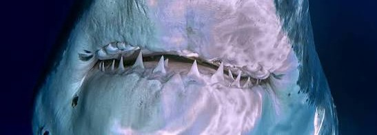
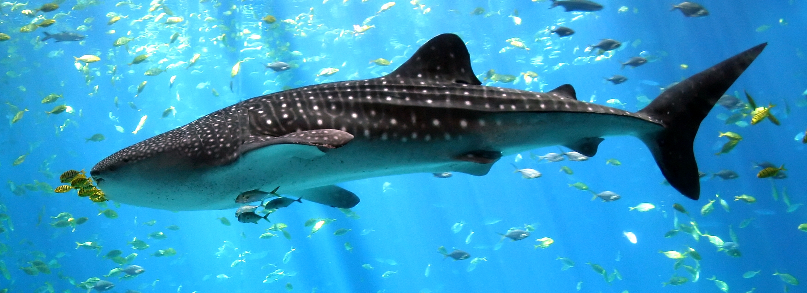
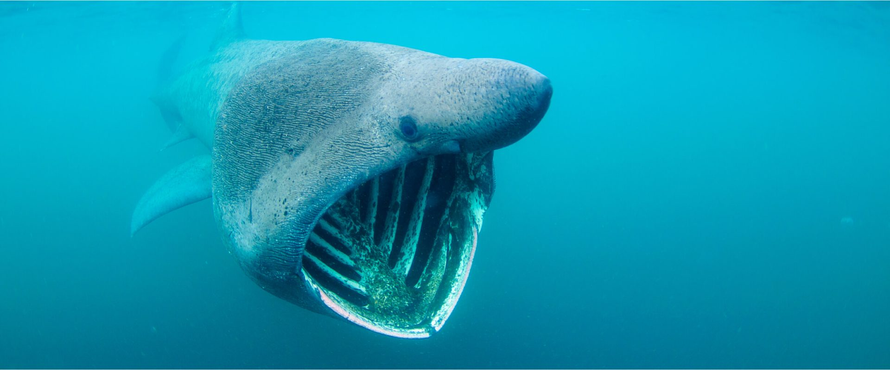
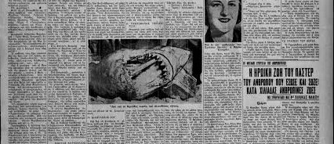

Geen zorgen
Hoewel er in de wateren rond Griekenland en Kos haaien voorkomen, hoef je je absoluut geen zorgen te maken tijdens je vakantie.
Rond Kos – en waarom je je geen zorgen hoeft te maken.

Hoewel er in de wateren rond Griekenland en Kos haaien voorkomen, hoef je je absoluut geen zorgen te maken tijdens je vakantie.

De meeste soorten hier zijn niet gevaarlijk voor mensen. Waarnemingen zijn uiterst zeldzaam en komen vrijwel nooit voor in het ondiepe water langs de kust. Haaien blijven meestal in dieper water, ver van de stranden.

Soms wordt de reuzenhaai (basking shark) waargenomen – tot 12 meter lang. Wees niet bang: hij eet alleen plankton en is ongevaarlijk.

In 180 jaar zijn er slechts 15 geregistreerde haaienaanvallen geweest in Griekenland, de laatste in de jaren ’50. Dodelijke incidenten sindsdien: geen.
Around Kos – and why you need not worry.
Although sharks do live in the waters around Greece and Kos, you do not need to worry during your holiday.
Most species here are not dangerous to people. Sightings are extremely rare and almost never happen in shallow water along the coast. Sharks usually stay in deeper water, far from the beaches.
Sometimes the basking shark is seen – up to 12 metres long. Don’t be afraid: it only eats plankton and is harmless.
In 180 years there have been only 15 recorded shark attacks in Greece, the last in the 1950s. Fatal incidents since then: none.
Rund um Kos – und warum du dir keine Sorgen machen musst.
Obwohl es in den Gewässern um Griechenland und Kos Haie gibt, musst du dir im Urlaub keine Sorgen machen.
Die meisten Arten hier sind für Menschen ungefährlich. Sichtungen sind extrem selten und kommen im flachen Wasser an der Küste praktisch nicht vor.
Manchmal wird der Riesenhai gesehen – bis 12 Meter lang. Keine Angst: er frisst nur Plankton und ist harmlos.
In 180 Jahren gab es nur 15 registrierte Haiangriffe in Griechenland, den letzten in den 1950er-Jahren. Tödliche Vorfälle seither: keine.
Intorno a Kos – e perché non devi preoccuparti.
Anche se nelle acque intorno alla Grecia e a Kos ci sono squali, non devi preoccuparti durante le vacanze.
La maggior parte delle specie qui non è pericolosa per l’uomo. Gli avvistamenti sono rarissimi e quasi mai in acqua bassa lungo la costa.
A volte si vede lo squalo elefante – fino a 12 metri. Non temere: mangia solo plancton ed è innocuo.
In 180 anni ci sono stati solo 15 attacchi di squalo registrati in Grecia, l’ultimo negli anni ’50. Incidenti mortali da allora: nessuno.
Kos çevresi – ve neden endişelenmenize gerek yok.
Yunanistan ve Kos sularında köpekbalıkları olsa da tatilinizde endişelenmenize gerek yok.
Buradaki türlerin çoğu insanlar için tehlikeli değildir. Görülmeleri son derece nadirdir ve kıyı sığ sularında neredeyse hiç olmaz.
Bazen 12 metreye kadar büyüyen dev köpekbalığı (basking shark) görülür. Korkmayın: sadece plankton yer ve zararsızdır.
180 yılda Yunanistan’da yalnızca 15 kayıtlı köpekbalığı saldırısı olmuştur; sonuncusu 1950’lerde. O zamandan beri ölümcül olay yok.
Alrededor de Kos – y por qué no debes preocuparte.
Aunque hay tiburones en las aguas de Grecia y Kos, no tienes que preocuparte durante tus vacaciones.
La mayoría de las especies aquí no son peligrosas para las personas. Los avistamientos son muy raros y casi nunca ocurren en agua poco profunda junto a la costa.
A veces se ve el tiburón peregrino – hasta 12 metros. No temas: solo come plancton y es inofensivo.
En 180 años solo ha habido 15 ataques de tiburón registrados en Grecia, el último en los años 50. Incidentes mortales desde entonces: ninguno.